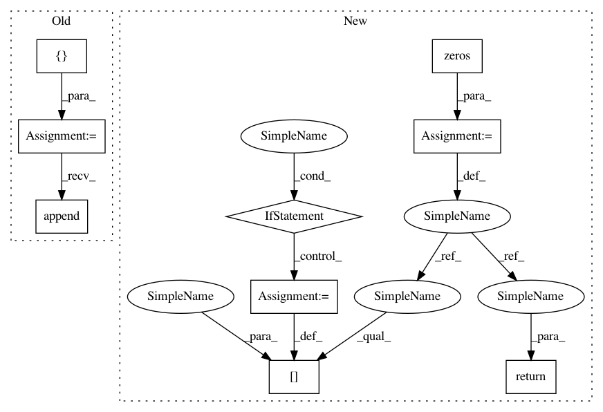

90b78b1379b3423aa3b4b5d0de7313f88bda23ab,chainercv/utils/mask/mask_to_bbox.py,,mask_to_bbox,#,5
Before Change
// CuPy does not support argwhere yet
mask = cuda.to_cpu(mask)
bbox = []
for msk in mask:
where = np.argwhere(msk)
if len(where) > 0:
y_min, x_min = where.min(0)
y_max, x_max = where.max(0) + 1
else:
y_min, x_min, y_max, x_max = 0, 0, 0, 0
bbox.append((y_min, x_min, y_max, x_max))
if len(bbox) == 0:
return xp.empty((0, 4), dtype=np.float32)
return xp.array(bbox, dtype=np.float32)
After Change
xp = cuda.get_array_module(mask)
instance_index, ys, xs = xp.nonzero(mask)
bbox = xp.zeros((R, 4), dtype=np.float32)
for i in range(R):
ys_i = ys[instance_index == i]
xs_i = xs[instance_index == i]
if len(ys_i) == 0:
continue
y_min = ys_i.min()
x_min = xs_i.min()
y_max = ys_i.max() + 1
x_max = xs_i.max() + 1
bbox[i] = xp.array([y_min, x_min, y_max, x_max], dtype=np.float32)
return bbox
In pattern: SUPERPATTERN
Frequency: 3
Non-data size: 9
Instances
Project Name: chainer/chainercv
Commit Name: 90b78b1379b3423aa3b4b5d0de7313f88bda23ab
Time: 2019-02-17
Author: yuyuniitani@gmail.com
File Name: chainercv/utils/mask/mask_to_bbox.py
Class Name:
Method Name: mask_to_bbox
Project Name: chainer/chainercv
Commit Name: 90b78b1379b3423aa3b4b5d0de7313f88bda23ab
Time: 2019-02-17
Author: yuyuniitani@gmail.com
File Name: chainercv/utils/mask/mask_to_bbox.py
Class Name:
Method Name: mask_to_bbox
Project Name: yzhao062/pyod
Commit Name: f88ec970f95c3b1fb1f0d72ccf0069732e4a0510
Time: 2019-06-12
Author: yalmardeny@tssg,org
File Name: pyod/models/sod.py
Class Name: SOD
Method Name: _sod
Project Name: yzhao062/pyod
Commit Name: f5b2d7fecaea7886cc527ee16c292e1cd4bb736a
Time: 2019-05-29
Author: yalmardeny@tssg,org
File Name: pyod/models/sod.py
Class Name: SOD
Method Name: _sod